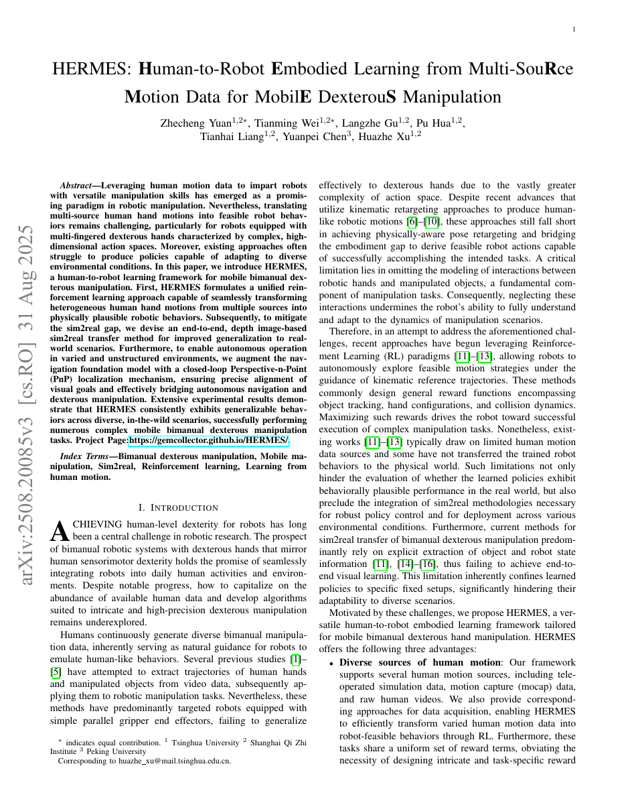

| 标题 | HERMES: Human-to-Robot Embodied Learning from Multi-Source Motion Data for Mobile Dexterous Manipulation |
| 作者 | Zhecheng Yuan, Tianming Wei, Langzhe Gu, Pu Hua, Tianhai Liang, Yuanpei Chen, Huazhe Xu (corresponding) |
| 单位 | Tsinghua University, Shanghai Qi Zhi Institute, Peking University |
| 发表 | arXiv (arXiv:2508.20085), 2025年8月27日 |
| 项目链接 | Project Page | arXiv:2508.20085 |
| 一句话总结 | HERMES 是一个统一的框架，将异构人类手部运动数据（仿真遥操作、MoCap动作捕捉、无约束野生视频）转化为物理可行的移动双臂灵巧操作技能。核心创新包括：(1) 统一 RL，采用接触门控的物体中心奖励机制，接受任意来源的人类运动数据，且每任务只需一次演示；(2) 基于深度图像的 sim2real 迁移，通过 DAgger 蒸馏结合针对性深度增强实现；(3) 闭环 PnP 定位，桥接 ViNT 导航与精确操作之间的精度鸿沟。在 6 个双臂任务上达到 67.8% 成功率（较基线方法提升 54%）。 |
| 灵感来源 | 启发了什么洞察 | 类型 |
|---|---|---|
| 多源人类数据（Apple Vision Pro 遥操作、OakInk2 MoCap、野生视频） | 不同模态共享同一个核心结构：物体运动意图（object motion intent）。提取物体轨迹和手-物接触状态作为共享表征——三种数据源统一输入同一管线。 | 表征 |
| 残差策略学习（Residual policy learning, Johannsmeier et al., 2019） | 手臂动作 = 粗粒度（人类轨迹）+ 精细残差（网络预测）。人类先验引导探索；残差部分处理具身修正。 | 方法 |
| DAgger（Ross et al., 2011）+ 深度模态 | 将状态专家策略蒸馏为基于深度图像的学生策略，通过 DAgger 实现。深度（而非 RGB）提高了 sim2real 鲁棒性——不受光照和纹理变化影响。 | 架构 |
| ViNT 导航 + 经典 PnP 几何 | 基础模型提供长时域导航能力但缺乏末端精度。闭环 PnP（LoFTR + RANSAC + PID）桥接这一鸿沟，达到 1.3-3.2 cm 精度。 | 整合 |
flowchart TB
subgraph DATA["多源人类运动数据"]
TELEOP["遥操作（仿真）Apple VisionPro 75Hz"]
MOCAP["MoCap 数据集 OakInk2 via DexPilot"]
VIDEO["野生视频 WiLoR + FoundationPose + PnP"]
end
subgraph RETARGET["运动重定向与增强"]
RET["DexPilot 运动学重定向"]
AUG["轨迹增强 单次演示周围随机化物体位姿"]
UNIFY["统一格式 物体轨迹 + 手部关键点"]
end
subgraph RL["统一 RL 训练（MuJoCo / MJX）"]
MDP["目标条件 MDP s=(本体感知, 目标) a=关节指令"]
REWARD["统一奖励：物体中心距离链 + 轨迹跟踪 + 功率惩罚"]
DRM["DrM Off-Policy（样本高效，休眠比率）"]
PPO["PPO On-Policy MJX（GPU 并行，快速墙钟）"]
RESIDUAL["残差动作：手臂=(粗+精) 手部=学习"]
end
subgraph DISTILL["DAgger 蒸馏至视觉策略"]
TEACHER["基于状态的专家策略"]
STUDENT["基于深度图像的学生 ResNet-18 + GroupNorm"]
DAUG["深度增强 裁剪、噪声、模糊、NYU 混合"]
end
subgraph DEPLOY["真实世界部署"]
NAV["ViNT 图像目标导航"]
PNP["闭环 PnP LoFTR + RANSAC + PID"]
HYBRID["混合 Sim2Real 控制 观测→动作→仿真前向→关节"]
ROBOT["物理机器人 X1 + 2x Galaxea A1 + 2x OYMotion 手"]
end
TELEOP --> RET
MOCAP --> RET
VIDEO --> RET
RET --> AUG --> UNIFY --> MDP
MDP --> REWARD --> DRM & PPO
DRM & PPO --> RESIDUAL --> TEACHER
TEACHER --> STUDENT
DAUG --> STUDENT
STUDENT --> NAV --> PNP --> HYBRID --> ROBOT
classDef data fill:#fef7ed,stroke:#f59e0b,stroke-width:2px,color:#92400e
classDef retarget fill:#e8f0fe,stroke:#3b82f6,stroke-width:2px,color:#1d4ed8
classDef rl fill:#f0ebfd,stroke:#8b5cf6,stroke-width:2px,color:#6d28d9
classDef distill fill:#e6f7ee,stroke:#10b981,stroke-width:2px,color:#047857
classDef deploy fill:#ffe4e6,stroke:#f43f5e,stroke-width:2px,color:#be123c
class TELEOP,MOCAP,VIDEO data
class RET,AUG,UNIFY retarget
class MDP,REWARD,DRM,PPO,RESIDUAL rl
class TEACHER,STUDENT,DAUG distill
class NAV,PNP,HYBRID,ROBOT deploy
flowchart LR
subgraph HUMAN["人类数据（每任务一次演示）"]
H1["遥操作：Apple VisionPro 手臂+手部位姿"]
H2["MoCap：OakInk2 MANO 手部参数"]
H3["视频：WiLoR 2D/3D 关键点 + FoundationPose 物体位姿"]
end
subgraph EXTRACT["共享表征"]
E1["手部关键点：指尖位置、手掌坐标"]
E2["物体位姿：位置 + 朝向（四元数）"]
E3["接触状态：手-物网格接触点对"]
end
subgraph LEARN["RL 训练 + Sim2Real 迁移"]
S1["状态：本体感知 + 参考轨迹目标"]
S2["24-DoF 动作：残差（手臂粗+精，手部学习）"]
S3["奖励：r_chain（接触门控）+ r_track + r_power"]
S4["DAgger：蒸馏状态专家至深度视觉学生"]
end
subgraph EXECUTE["真实世界部署"]
R1["RGB-D：RealSense L515 堆叠深度帧"]
R2["策略：深度图像→关节指令 via ResNet-18+GroupNorm"]
R3["混合控制：真实观测→动作→仿真前向→真实关节"]
end
HUMAN -->|"重定向 + 增强"| EXTRACT
EXTRACT -->|"参考轨迹"| LEARN
LEARN -->|"视觉策略"| EXECUTE
classDef human fill:#fef7ed,stroke:#f59e0b,stroke-width:2px,color:#92400e
classDef extract fill:#e8f0fe,stroke:#3b82f6,stroke-width:2px,color:#1d4ed8
classDef learn fill:#f0ebfd,stroke:#8b5cf6,stroke-width:2px,color:#6d28d9
classDef execute fill:#e6f7ee,stroke:#10b981,stroke-width:2px,color:#047857
class H1,H2,H3 human
class E1,E2,E3 extract
class S1,S2,S3,S4 learn
class R1,R2,R3 execute
flowchart TD
subgraph PHASE1["阶段一：数据采集与预处理"]
P1A["每任务采集 1 次人类演示，任意来源"]
P1B["DexPilot 重定向：人类关节映射到机器人关节"]
P1C["提取物体轨迹 via FoundationPose 或真值"]
P1D["轨迹增强：在演示周围随机化物体位姿"]
end
subgraph PHASE2["阶段二：仿真中 RL 训练"]
P2A["初始化 MuJoCo 环境：机器人 URDF、物体网格、碰撞基元"]
P2B["DrM：off-policy，休眠比率机制，高样本效率"]
P2C["PPO on MJX：GPU 加速并行环境，快速墙钟"]
P2D["提前终止 + 碰撞禁用退火策略促进探索"]
end
subgraph PHASE3["阶段三：Sim2Real 迁移"]
P3A["DAgger：混合专家/学生 rollout，退火调度"]
P3B["深度增强：裁剪、噪声、模糊、NYU 混合"]
P3C["训练学生：ResNet-18+GroupNorm，L1/L2 动作损失"]
P3D["混合控制：真实观测→动作→仿真前向→真实关节"]
end
subgraph PHASE4["阶段四：移动部署"]
P4A["ViNT：导航至目标图像位置（零样本）"]
P4B["Efficient LoFTR：当前视图与目标视图稠密特征匹配"]
P4C["PnP + PID：RANSAC 位姿估计 + PID x/y/yaw 调节"]
P4D["操作策略：零样本双臂任务执行"]
end
PHASE1 --> PHASE2 --> PHASE3 --> PHASE4
P4D -.->|"反馈：透明物体需 5 条真实轨迹微调"| P3C
P4C -.->|"反馈：达到 1.3-3.2cm / 0.57-2.06deg"| P4B
P2D -.->|"反馈：碰撞参数需手工调参"| P2A
classDef p1 fill:#fef7ed,stroke:#f59e0b,stroke-width:2px,color:#92400e
classDef p2 fill:#e8f0fe,stroke:#3b82f6,stroke-width:2px,color:#1d4ed8
classDef p3 fill:#f0ebfd,stroke:#8b5cf6,stroke-width:2px,color:#6d28d9
classDef p4 fill:#e6f7ee,stroke:#10b981,stroke-width:2px,color:#047857
class P1A,P1B,P1C,P1D p1
class P2A,P2B,P2C,P2D p2
class P3A,P3B,P3C,P3D p3
class P4A,P4B,P4C,P4D p4
| 类别 | 内容 | 维度 |
|---|---|---|
| 输入（训练） | 单次人类演示：手部关键点 + 物体轨迹 + 仿真中机器人本体感知 | 手部：6-DoF x 2；物体：6-DoF 轨迹 |
| 输入（推理） | RealSense L515 堆叠深度图像（3 帧）+ 机器人本体感知 | 深度：HxW；本体感知：手臂 + 手部关节位置 |
| 输出 | 双 6-DoF 手臂（Galaxea A1）+ 双 6-DoF 手部（OYMotion）的关节级位置指令 | 手臂：6 DoF x 2；手部：6 DoF x 2（共 24 DoF） |
| 任务 | 6 个双臂任务：交接（Handover）、倒茶（Pour Teapot）、擦桌（Clean Table）、扫描瓶子（Scan Bottle）、取下瓶子（Put-off Bottle）、清洗盘子（Clean Plate） | 全部需要协调双手灵巧性 + 移动底座接近 |
这是一个全栈机器人学习系统，涵盖模仿学习、RL、sim2real 迁移和移动操作。不是单纯的算法论文，而是一个完整的管线：从原始多源人类数据到真实世界双臂灵巧执行，运行在物理移动机器人上。平台配置：X1 底座 + 双 Galaxea A1 手臂 + 双 OYMotion 手部 + RealSense L515 + NVIDIA RTX 4090。核心主张：每任务仅需一次人类演示，得益于轨迹增强和基于 RL 的策略自适应。
| 先前方法 | 核心思路 | 失败原因 |
|---|---|---|
| 运动学重定向 + 回放（DexPilot） | 优化映射人手到机器人关节，开环回放 | 无动力学：轨迹不可行，自碰撞。物体位姿变化时完全失败。无法泛化。 |
| 任务特定模仿（ACT, Diffusion Policy） | 每任务采集 50-200 次遥操作演示，行为克隆 | 数据饥渴：每任务数百次演示。无跨任务或跨来源泛化。无 sim2real。 |
| ObjDex（Gu et al., 2024） | 从人类视频出发的物体中心 RL 奖励 | 仅支持单物体：单手、单物体。双臂多物体任务失败。奖励需逐任务调参。 |
| ViNT + 开环操作 | 导航至目标，执行预录轨迹 | 末端误差过大：约 10 cm 偏移导致操作失败。无闭环修正。 |
| RGB-D SLAM + 导航（RTAB-MAP） | 通过 SLAM 建图、定位、规划路径 | 无纹理场景失效：无特征时退化。需要预先建图。 |
HERMES 是一个四阶段管线：(1) 多源人类运动重定向和轨迹提取；(2) 统一 RL，采用目标条件 MDP 和残差动作学习；(3) DAgger 蒸馏，从状态专家到深度视觉学生；(4) 移动部署，通过 ViNT 导航 + 闭环 PnP + 混合控制实现。
| 参数 | 取值 | 含义 |
|---|---|---|
| 动作空间 | 24-DoF | 双 6-DoF 手臂（12）+ 双 6-DoF 手部（12） |
| RL 算法 | DrM + PPO (MJX) | DrM：off-policy，含休眠比率；PPO：on-policy，GPU 并行 |
| 视觉编码器 | ResNet-18 + GroupNorm | 3 帧堆叠深度图像；GroupNorm 适配小批量 DAgger |
| 深度增强 | 裁剪 + 噪声 + NYU 混合 | 裁剪 [0.3m, 3.0m]；高斯 sigma=0.005；混合 alpha=0.2 |
| 接触门控阈值 | $\delta = 3$ 个点 | 激活奖励所需的最小网格接触点对数 |
| DAgger 退火 | $\beta_0=1.0 \to \beta_{\min}=0.1$ | 专家比例从 100% 衰减至 10% |
| 轨迹增强 | 5 cm / 15 deg | 在单次演示周围随机化物体位姿 |
三个相互关联的原理：(1) 用于接触密集操作的接触门控物体中心奖励；(2) 用于可处理的高自由度探索的残差动作分解；(3) 用于鲁棒感知迁移的基于深度图像的 sim2real 方法。
将截图保存到 figures/ 目录。当前 figures/overview.png 可用。

将截图保存为figures/overview.pngHERMES 完整管线：三种人类数据源（仿真遥操作、MoCap、野生视频）输入统一 RL 训练，随后通过 DAgger 蒸馏 + ViNT + PnP 部署到移动双臂机器人上。
figures/results.png六个任务：双臂交接（Bimanual Handover）、倒茶（Pour Teapot）、擦桌（Clean Table）、扫描瓶子（Scan Bottle）、取下瓶子（Put-off Bottle）、清洗盘子（Clean Plate）。
figures/localization.png| 失败模式 | 根因 | 严重程度 |
|---|---|---|
| 透明表面深度失效 | 结构光无法在散射/透射表面测量 | 高 |
| 视觉模糊场景下 ViNT 失效 | 感知混淆（走廊中相同外观的门） | 高 |
| 双臂接触不稳定 | 一只手的力量误差破坏另一只手的抓握；无显式协调奖励 | 中 |
| 大视角变化下 PnP 失效 | LoFTR 在超过约 45 度时退化；ViNT 必须在容差范围内 | 中 |
| DAgger 分布偏移 | 学生漂移至专家未覆盖的状态；退火策略缓解但未消除 | 低-中 |
| 参考文献 | 重要性说明 |
|---|---|
| Gu et al. (2024) -- ObjDex. arXiv | 最接近的前驱工作。基于视频的物体中心奖励。单手、单物体。HERMES 扩展至双臂、多物体、移动平台。 |
| Ross et al. (2011) -- DAgger. AISTATS | DAgger 原论文。HERMES 将其应用于状态到视觉的蒸馏，配合特定域的深度增强。 |
| Sferrazza et al. (2024) -- ViNT. CoRL | 导航骨干。理解其末端精度限制是 PnP 桥接设计的关键。 |
| Arunachalam et al. (2022) -- DexPilot. CoRL | 运动学重定向作为初始化。RL 处理 DexPilot 无法解决的残差鸿沟。 |
| Zhao et al. (2023) -- DrM. NeurIPS | 采用休眠比率机制的 RL 算法，在高维空间中增强探索。 |